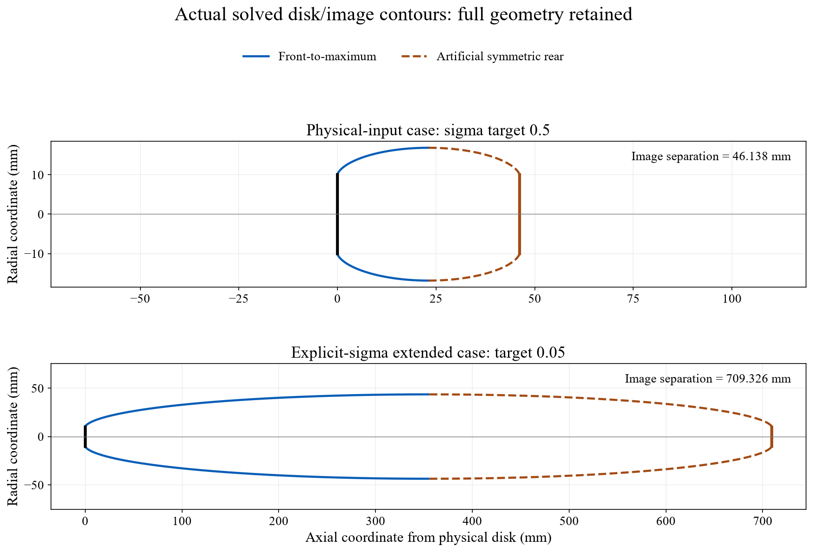
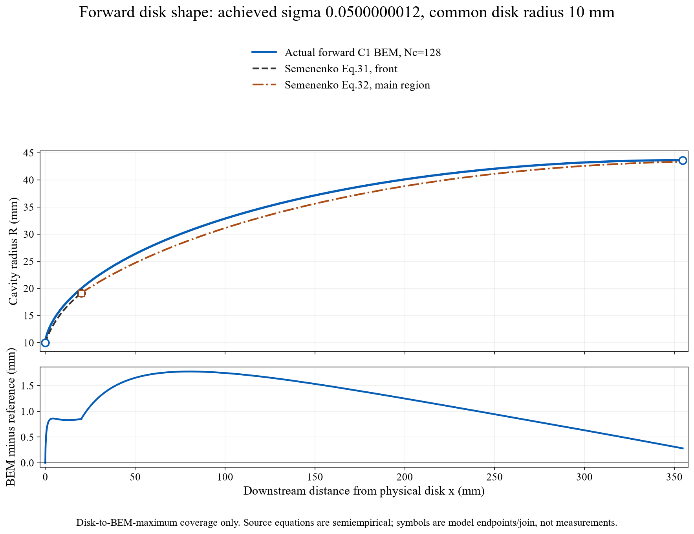
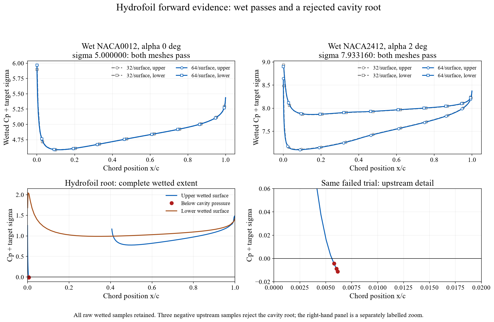

Forward cavitation problems: actual inputs, outputs and shapes
A forward solve prescribes pressure and speed, or explicitly prescribes σ, and searches for an unknown extent. The stored cases below exercise that search. Their final field checks and their physical limitations remain separate.
The disk examples pass their reported final numerical field checks under an artificial image-disk closure. They do not establish experimental accuracy or a natural cavity-tail prediction. The hydrofoil cavity root shown below fails physical admission; two fully wetted hydrofoil cases pass their pressure screens.
Disk: pressure input and explicit-σ input
| Quantity | Physical-input case | Explicit-σ extended case |
|---|---|---|
| Prescribed input | p∞ = 101325 Pa, pc = 2339 Pa, ρ = 1000 kg/m³, U = 19.89834164 m/s | σ = 0.05; extended research range explicitly enabled |
| Physical disk radius Rn | 10 mm | 10 mm |
| Target / achieved σ | 0.5 / 0.5000030314 | 0.05 / 0.05000000117 |
| Solved full image separation L/Rn | 4.61379104 | 70.93257559 |
| Image separation / maximum radius | 46.1379 mm / 16.8521 mm | 709.3258 mm / 43.6263 mm |
| Scalar search / final solve | 6 scalar calls + separate audited solve | 6 scalar calls + separate audited solve |
| Maximum direct normal defect / U | 0.000060163 | 0.00256471 |
| Maximum cavity |Cp + σ| defect | 0.00011995 | 0.00419637 |
| Recorded outcome | Root, nodal, geometry and direct-field checks pass | Root, nodal, geometry and direct-field checks pass |
| Exact raw case | Physical case JSON | Explicit-σ case JSON |
Both use 128 cavity bands and 64 bands per disk face. The final direct-field audit retains 15 fractions of every panel, from 0.001 to 0.999. The unchanged limits are 0.01U for normal velocity and 0.02 for the cavity pressure defect. Mesh-accuracy and experimental-accuracy qualification flags remain false.
In the σ = 0.05 case, the retained pressure/speed defaults correspond to σ = 0.5; the explicit σ override controls the BEM. Those defaults are not presented as the physical conditions of the 0.05 case. The stored result withholds dimensional disk force and scales geometry by the specified 10 mm radius.

The actual σ = 0.05 forward shape against a published reference
Semenenko (2001), PDF page 15, Eqs. 31–32 supplies a disk-front law and a semiempirical main-radius correlation based on natural disk cavities for 0.012 ≤ σ ≤ 0.057 (retrieved primary scan). The comparison uses the actual achieved σ = 0.05000000117 and the same physical Rn = 10 mm. No fitted shift, radius normalization or length adjustment is applied.

This is a comparison with a semiempirical correlation, not with raw experimental shape points. The source's natural closure and the BEM's rear image disk are different. Agreement near the maximum cannot validate the full spatial profile, natural tail, cylinder reattachment or cloud shedding. The σ = 0.5 example is outside the published profile-fit range and is not compared with that correlation.
Hydrofoil: wet passes and a physically rejected cavity root
The production BEM's fully wetted preflight passes at 32 and 64 panels per surface for NACA0012, α = 0°, σ = 5, and for NACA2412, α = 2°, U = 5 m/s, p∞ = 101325 Pa, pc = 2339 Pa, ρ = 998.2 kg/m³ (σ = 7.93315969). The fine-mesh minimum pressure margins Cp + σ are 4.58624619 and 7.10139911. These are no-cavity-required results within the stated model, not developed-cavity validation.
The actual inverse-to-forward numerical roundtrip uses NACA0012, α = 4°, target σ = 1.06968813137 and resolution 48. It reaches a numerical length root l/c = 0.4, achieved σ = 1.06972556475, with residual +0.0000374334. However, three wetted panels fall below cavity pressure; the minimum target-pressure margin is −0.0112592769 at x/c = 0.00614277. The result remains FORWARD_ROOT_PHYSICAL_SCREEN_FAILED with no accepted cavity shape or volume. Its target originated from the recorded inverse candidate; this is not an independent physical benchmark.

There is still no admitted cavitating hydrofoil case demonstrated by these records. Numerical root convergence, physical admission and experimental agreement are separate requirements. Rejection does not prove that real cavitation is absent.
Raw evidence, failure history and reproduction
Recorded cases: 1 November 2026. Exact source-relative paths and SHA256 hashes · Portable inputs/outputs/status · Figure preparation script · Artifact checks. Figure preparation reads saved states and performs no new BEM solves.
The unsupported default-domain σ = 0.05 result and interrupted 300-second attempt remain nonaccepted diagnostics: Unsupported-range record · Interrupted attempt. The completed extended case used its explicitly declared 600-second budget; an interrupted state is not substituted for its final audited result.
An optional cylinder is checked for geometric dry containment inside the solved envelope. That does not supply wetted cylinder flow, afterbody drag, a re-entrant jet or natural reattachment. Recent primary methods and their reviewed scope identifies work addressing broader problems.